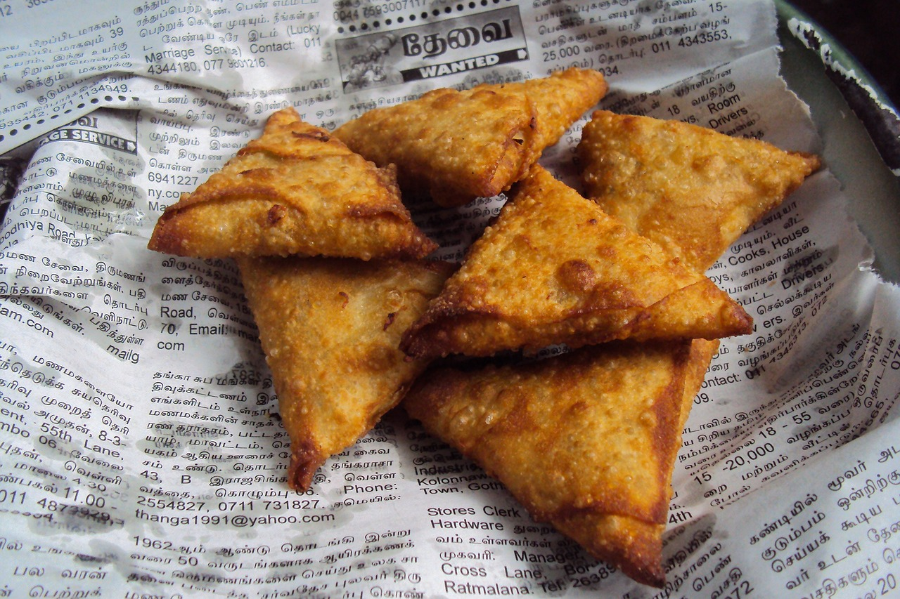

Samosas

Image credits:Mohamed Nuzrath
Description:
Samosas, iconic in Indian cuisine, are golden, triangular pastries with a crisp exterior enveloping a flavorful filling of spiced potatoes, peas, and aromatic spices. Deep-fried to golden perfection, these hand-held delights offer a harmonious blend of textures and tastes. Ideal for snacking or as an appetizer, samosas bring the essence of Indian street food to your table.
Ingredients:
- 2 cups all-purpose flour
- 1/4 cup ghee or vegetable oil
- 1/2 teaspoon salt
- 1/2 cup water (approximately, for dough)
- 2 cups boiled and mashed potatoes
- 1/2 cup boiled peas
- 1 tablespoon oil
- 1 teaspoon cumin seeds
- 1 tablespoon ginger-garlic paste
- 1/2 cup finely chopped onions
- 1/2 cup chopped cilantro
- 1 teaspoon garam masala
- 1 teaspoon ground coriander
- 1 teaspoon ground cumin
- Salt to taste
- Oil for frying
Steps: